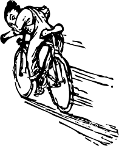
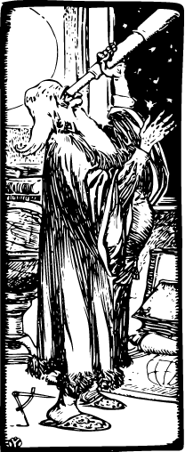

Вы здесь
Геолокация это способ выяснить, где вы находитесь в мире и дополнительно обмен этой информацией с людьми, которым вы доверяете. Существует несколько способов выяснить ваше нахождение — по IP-адресу; подключению к беспроводной сети; через антенну, к которой подключается ваш сотовый телефон во время разговора; или через GPS-оборудование, вычисляющее широту и долготу на основе информации посылаемой спутниками в небе.
Спроси профессора Разметкина
☞В: Геолокация звучит страшно. Можно её отключить?
О. Конфиденциальность это первое что вызывает озабоченность, когда вы говорите об отправке информации о вашем физическом положении на веб-сервер. В API геолокации говорится прямо: «браузеры не должны отправлять информацию о местоположении на сайты без специального разрешения пользователя». Иными словами, обмен информацией о вашем местоположении происходит всегда с вашим участием. Если вы не желаете, обмена не будет.
API геолокации
С помощью API геолокации вы можете делиться вашим местоположением с доверенными сайтами. Широта и долгота доступна для JavaScript, их в свою очередь, можно отправить обратно на удалённый веб-сервер и использовать для чудесных вещей, вроде поиска ближайших предприятий или показа вашего местоположения на карте.
Как вы можете видеть из следующей таблицы, API геолокации поддерживается большинством браузеров на настольных и мобильных устройствах. Кроме того, некоторые старые браузеры и устройства могут быть дополнены библиотекой, как будет показано ниже в этой главе.
| IE | Firefox | Safari | Chrome | Opera | iPhone | Android |
| 9.0+ | 3.5+ | 5.0+ | 5.0+ | 10.6+ | 3.0+ | 2.0+ |
Наряду с поддержкой стандартного API геолокации есть множество API для конкретных устройств на других мобильных платформах. Я расскажу обо всем этом далее.
Покажи мне код
API геолокации строится вокруг нового свойства глобального объекта navigator — navigator.geolocation. Простейшее использование API выглядит следующим образом.
function get_location() {
navigator.geolocation.getCurrentPosition(show_map);
}Здесь нет проверки, обработки ошибок и дополнительных опций. Ваше веб-приложение должно включать, по крайней мере, первые два пункта. Чтобы определить поддержку API геолокации, вы можете использовать Modernizr.
function get_location() {
if (Modernizr.geolocation) {
navigator.geolocation.getCurrentPosition(show_map);
} else {
// Нет встроенной поддержки
}
}Что делать без поддержки геолокации зависит от вас. Я объясню про запасной вариант Gears позже, но сначала хочу поговорить о том, что происходит во время вызова getCurrentPosition(). Как я упоминал в начале главы, поддержка геолокации происходит при вашем участии. Это означает, что браузер никогда не заставит вас раскрыть своё текущее расположение удалённому серверу. Способ взаимодействия с пользователем отличается от браузера к браузеру. В Mozilla Firefox вызов функции getCurrentPosition() выведет информационную панель в верхней части окна браузера. Выглядит она следующим образом.
Вам как пользователю:
- говорят, что сайт желает знать ваше местоположение;
- говорят, какой именно сайт желает это знать;
- можно щёлкнуть на «Подробнее» и перейти на справочную страницу Firefox, где объясняют что происходит;
- можно сообщить своё местоположение;
- можно не сообщать своё местоположение;
- можно указать браузеру запомнить ваш выбор, и в дальнейшем панель на этом сайте вы больше не увидите.
Кроме того, эта информационная панель является:
- немодальной, поэтому не помешает вам переходить в другое окно или вкладку браузера;
- привязанной к вкладке, она исчезает при переключении на другую вкладку или окно и появляется снова, когда вы возвращаетесь в исходную вкладку;
- безусловной, так что нет способа ее обойти;
- блокируемой, поэтому нет никаких шансов, что сайт может определить ваше местоположение, пока панель ждёт ответа.
Вы только что видели код JavaScript, который вызывает эту информационную панель. Это функция, которая обращается к другой функции (я назвал её show_map) и ждет от нее отзыв. Вызов getCurrentPosition() возвращает результат сразу, но это не означает, что у вас есть доступ к местоположению пользователя. В первый раз вы гарантированно получите информацию о местоположении в функции обратного вызова, которая выглядит следующим образом:
function show_map(position) {
var latitude = position.coords.latitude;
var longitude = position.coords.longitude;
// Посмотрим карту или сделаем что-нибудь интересное!
}Данная функция вызывается с одним параметром, это объект с двумя свойствами: coords и timestamp.
timestamp содержит дату и время, когда было вычислено место. Так как это происходит асинхронно, вы не можете знать заранее, когда это произойдёт. Пользователю потребуется некоторое время, чтобы прочитать информационную панель и согласиться указать своё местоположение. Устройства на базе GPS могут занять ещё больше время для подключения к спутникам.
Объект coords содержит свойства, такие как latitude и longitude, которые определяют физическое местоположение пользователя в мире.
| Свойство | Тип | Замечание |
|---|---|---|
| coords.latitude | double | В градусах |
| coords.longitude | double | В градусах |
| coords.altitude | double или null | В метрах |
| coords.accuracy | double | В метрах |
| coords.altitudeAccuracy | double или null | В метрах |
| coords.heading | double или null | Градусы по часовой стрелке от севера |
| coords.speed | double или null | В метрах в секунду |
| timestamp | DOMTimeStamp | Как у объекта Date() |

Только три свойства будут здесь гарантированно (coords.latitude, coords.longitude и coords.accuracy). Остальные, возможно, вернут null в зависимости от возможностей вашего устройства и сервера, с которым вы общаетесь. Свойства heading и speed при возможности вычисляются на основе предыдущей позиции пользователя.
Обработка ошибок
Геолокация сложна и что-нибудь может пойти не так. Я уже упоминал про «согласие пользователя». Если ваше веб-приложение желает знать местоположение пользователя, но сам пользователь не считает нужным его сообщать, все пойдёт вразброд. Пользователь всегда прав. Но как это выглядит в коде? Взгляните на второй аргумент функции getCurrentPosition(): это функция обработки ошибок.
navigator.geolocation.getCurrentPosition(show_map, handle_error)Если что-то пойдёт не так, ваша функция для ошибок будет вызвана с объектом PositionError.
| Свойство | Тип | Замечание |
|---|---|---|
| code | short | Перечисленные значения |
| message | DOMString | Не предназначено для пользователей |
Свойство code может принимать следующие значения:
- PERMISSION_DENIED (1) — если пользователь нажал на кнопку «Не сообщать» или иным образом запретил доступ к своему местоположению;
- POSITION_UNAVAILABLE (2) — если сеть не работает или нет связи со спутниками;
- TIMEOUT (3) — если сеть работает, но вычисление положения занимает слишком много времени. Насколько это «слишком много»? Я покажу вам, как это определить в следующем разделе;
- UNKNOWN_ERROR (0) — если что-нибудь ещё пойдёт не так.
function handle_error(err) {
if (err.code == 1) {
// пользователь сказал нет!
}
}Спроси профессора Разметкина
☞В: Работает ли геолокация на Международной космической станции, Луне или на других планетах?
О. В спецификации геолокации сказано «в качестве системы отсчёта координат используются Всемирная геодезическая система (WGS84). Другие системы не поддерживаются». Координаты Международной космической станции на орбите Земли могут быть описаны космонавтами через широту, долготу и высоту. Тем не менее, Всемирная геодезическая система ориентирована на Землю, поэтому не может быть использована для описания мест на Луне или других планетах.
Выбор! Я требую выбора!
Некоторые популярные мобильные устройства вроде телефонов iPhone и Android поддерживают два метода определения, где вы находитесь. Первый метод вычисляет ваше положение на основе относительной близости от различных сотовых вышек, управляемых оператором телефона. Этот метод быстр и не требует никакого специального GPS-оборудования, но даёт только общее представление о том, где вы находитесь. В зависимости от того, сколько сотовых вышек находится в вашем районе, «общее представление» может быть небольшим, как городской квартал или намного больше (километры в любом направлении).
Второй способ использует встроенное в устройство GPS-оборудование для общения со спутниками на земной орбите. GPS, как правило, определяет ваше местоположение в пределах нескольких метров. Недостатком встроенного GPS-чипа является то, что устройство потребляет много энергии, поэтому телефоны и другие мобильные устройства обычно отключают чип, пока он не требуется. Это означает, что возникнет задержка, пока чип инициализирует связь со спутниками. Если вы когда-либо использовали Google Maps на iPhone или другом смартфоне, то видели оба метода в действии. Вначале вы увидите большой круг, который уточняет ваше положение (поиск ближайших сотовых вышек), затем меньший круг (уточнение по другим сотовым вышкам), затем одна точка с требуемой позицией (полученная через спутники GPS).
Поэтому я и говорю о том, что в зависимости от вашего веб-приложения вы можете не получить требуемую высокую точность. Если вы просто ищете список близлежащих кинотеатров, «низкая точность», возможно, будет и хороша. Кинотеатров не так много, даже в населённом городе, так что вы, вероятно, получите больше одного. С другой стороны, если вы поворачиваете в реальном времени, вам действительно нужно точно знать, где сказать пользователю «повернуть направо через 20 метров» или что-то подобное.
Функция getCurrentPosition() имеет необязательный третий аргумент, объект PositionOptions. Он содержит три свойства, которые вы можете установить для объекта. Все свойства являются не обязательными, вы можете задать любой, все или ни одного.
| Свойство | Тип | Значение по умолчанию | Замечание |
|---|---|---|---|
| enableHighAccuracy | Булевой | false | Если true, то медленнее |
| timeout | long | Нет | В миллисекундах |
| maximumAge | long | 0 | В миллисекундах |
Свойство enableHighAccuracy делает именно то, как и звучит. Если оно установлено как true, устройство поддерживает свойство и пользователь соглашается указать свое местоположение, то устройство попытается обеспечить высокую точность. Оба телефона iPhone и Android имеют отдельные разрешения для низкой и высокой точности позиционирования, поэтому не исключено, что вызов getCurrentPosition() с enableHighAccuracy со значением true не получится, а вызов enableHighAccuracy со значением false удастся.
Свойство timeout это количество миллисекунд, которое веб-приложение будет ожидать для получения положения. Таймер не начинает отсчёт, пока пользователь не даст разрешение на попытку вычислить его положение. Он следит не за пользователем, а за сетью.

Свойство maximumAge позволяет устройству отвечать немедленно из закэшированной позиции. Например, вы обращаетесь к getCurrentPosition() в первый раз, пользователь соглашается и ваша функция успешно возвращает положение, вычисленное ровно в 10:00. Ровно через минуту, в 10:01 вы вызываете getCurrentPosition() снова установив свойство maximumAge в 75000.
navigator.geolocation.getCurrentPosition(
success_callback, error_callback, {maximumAge: 75000});Тем самым вы говорите, что вам необязательно знать текущее положение пользователя. Вы были бы рады знать, где он был 75 секунд назад (75000 миллисекунд). Устройство знает, где пользователь был 60 секунд назад (60000 миллисекунд), так как оно рассчитало место после первого вызова getCurrentPosition(). Поэтому устройство не будет пересчитывать текущее местоположение пользователя. Оно вернёт ту же информацию, что и в первый раз: ту же широту и долготу, ту же точность и то же время (10:00).
Прежде чем вы запросите местоположение пользователя, вы должны подумать о том, какая точность вам требуется и установить соответствующее значение enableHighAccuracy. Если вам необходимо найти место ещё раз, вы должны подумать о том, какая старая информация может пригодиться и установить соответствующее значение maximumAge. Если требуется искать локацию постоянно, то getCurrentPosition() не для вас, необходимо перейти на watchPosition().
Фукнция watchPosition() имеет ту же структуру что и getCurrentPosition(). Она содержит две функции обратного вызова, одна требуется для успеха, вторая для ошибок, также может иметь необязательный объект PositionOptions, он имеет те же свойства, о которых вы узнали ранее. Разница в том, что ваша функция будет вызываться каждый раз при смене местоположения пользователя. Нет необходимости постоянного опроса позиции, устройство само определит оптимальный интервал опроса и вызовет функцию при изменении положения пользователя. Вы можете использовать эту возможность для обновления видимым маркеров на карте, предоставления инструкции, куда идти дальше или чего-нибудь ещё. Это полностью зависит от вас.
Сама функция watchPosition() возвращает число, которое следует где-то хранить. Если вы хотите остановить слежение за положением пользователя, то можете вызвать метод clearWatch(), передать ему это число и устройство остановит вызов функции. Если вы когда-либо использовали функции setInterval() и clearInterval() в JavaScript, то это работает точно так же.
Что насчёт IE?
До версии 9 (технически, 9.0RC1) Internet Explorer не поддерживает API геолокации, который я только что описал. Но не отчаивайтесь! Для ранних версий нам понадобится запасной вариант на JavaScript. Это не тоже самое что и API геолокации от W3C, но служит той же цели. Пока мы затронули вопросы об устаревших платформах, я должен отметить, что многие старые мобильные платформы имеют API для геолокации ориентированные на свои устройства. BlackBerry, Nokia, Palm и OMTP BONDI предоставляют свои собственные API для геолокации. Конечно, вся их работа отличается от W3C, которая, в свою очередь, работает иначе, чем API геолокации от W3C. Уииииии!
geoposition.js для спасения
geoPositon.js это JavaScript-библиотека с открытым исходным кодом распространяемая по лицензии MIT. Она сглаживает различия между API от W3C и API представленных на мобильных платформах. Чтобы её использовать, вам надо добавить элемент <script> в нижнюю часть страницы. Технически, вы можете вставить в любое место, но скрипты в <head> могут замедлить загрузку страницы, так что не делайте этого.
<!DOCTYPE html>
<html>
<head>
<meta charset="utf-8">
<title>Погружение в HTML5</title>
</head>
<body>
...
<script src="geoPosition.js"></script>
</body>
</html>Теперь вы готовы использовать любой установленный API геолокации.
if (geoPosition.init()) {
geoPosition.getCurrentPosition(geoSuccess, geoError);
}Давайте рассмотрим это по шагам. Вначале вы должны явно вызвать функцию init(), она возвращает true, если поддержка геолокации доступна.
if (geoPosition.init()) {Вызов функции init() в действительности не обнаруживает ваше положение, функция просто проверяет, что это возможно. Чтобы действительно найти свое местоположение, необходимо вызвать функцию getCurrentPosition().
geoPosition.getCurrentPosition(geoSuccess, geo_error);Функция getCurrentPosition() переключает ваш браузер на запрос разрешения указать ваше местоположение. Если функция getCurrentPosition() оказалась успешной в поиске вашего местоположения — то есть вы дали своё разрешение, тогда API сработает подобно магии, — произойдёт вызов функции, переданной в качестве первого аргумента. В этом примере функция успеха называется geo_success.
geoPosition.getCurrentPosition(geo_success, geo_error);Функция успеха принимает единственный аргумент, который содержит информацию о положении.
function geo_success(p) {
alert("Ваша широта " + p.coords.latitude +
", долгота " + p.coords.longitude);
}Если функция getCurrentPosition() не может определить ваше местоположение — либо потому что вы отказались дать разрешение, либо API геолокации по некоторым причинам это не удалось — будет вызвана функция, указанная в качестве второго аргумента. В этом примере функция отказа называется geo_error.
geoPosition.getCurrentPosition(geo_success, geo_error);
У функции отказа нет аргументов.
geoPosition.js в настоящее время не поддерживает функцию watchPosition(). Если вам нужна постоянная информация о местоположении, необходимо самостоятельно активно опрашивать getCurrentPosition().
Заключение, живой пример
Вот живой пример с использованием geoPosition.js. Он пытается получить ваше местоположение и отобразить карту на месте рисунка.
Как это работает? Давайте смотреть. При загрузке страницы вызывается geoPosition.init() для определения геолокации доступной через любой интерфейс, который поддерживает geoPosition.js. Если это так, то появится ссылка, на которую можно нажать, чтобы посмотреть ваше местоположение. Щелчок по ссылке вызывает функцию lookup_location() показанную здесь.
function lookup_location() {
geoPosition.getCurrentPosition(show_map, show_map_error);
}Если вы дали согласие отследить ваше местоположение и службы в состоянии это сделать, geoPosition.js вызывает первую функцию show_map() с единственным аргументом loc. Объект loc содержит свойство coords в котором хранится широта, долгота и точность (в этом примере точность не используется). Остальное в функции show_map() используется для создания встроенной карты через Google Maps API.
function show_map(loc) {
$("#geo-wrapper").css({'width':'320px','height':'350px'});
var map = new GMap2(document.getElementById("geo-wrapper"));
var center = new GLatLng(loc.coords.latitude, loc.coords.longitude);
map.setCenter(center, 14);
map.addControl(new GSmallMapControl());
map.addControl(new GMapTypeControl());
map.addOverlay(new GMarker(center, {draggable: false, title: "Вы здесь"}));
}Если geoPosition.js не может определить ваше местоположение, он вызывает вторую функцию show_map_error().
function show_map_error() {
$("#live-geolocation").html('Не могу определить местоположение.');
}Дальнейшее чтение
- W3C geolocation API
- BlackBerry geolocation API
- Nokia geolocation API
- Palm geolocation API
- OMTP BONDI geolocation API
- geoPosition.js, скрипт для геолокации
- Internet Explorer 9 Guide for Developers: Geolocation

Все материалы сайта доступны по лицензии Creative Commons «Attribution-NonCommercial» («Атрибуция — Некоммерческое использование») 4.0 Всемирная, если не указано иное.